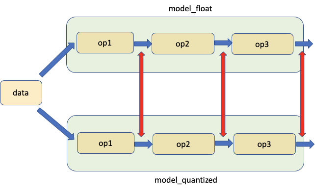
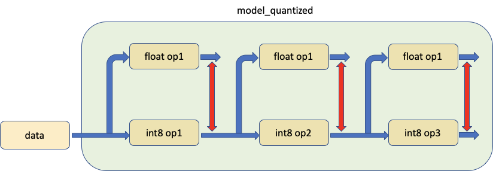
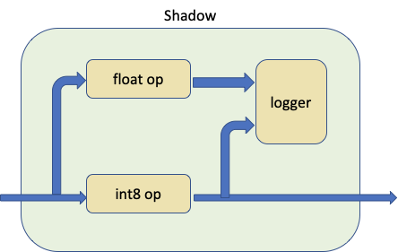

备注
点击此处下载完整示例代码
PyTorch 数值套件教程 ¶
创建时间：2025 年 4 月 1 日 | 最后更新时间：2025 年 4 月 1 日 | 最后验证：未验证
简介
量化在有效时很好，但当我们不满足预期的精度时，很难知道哪里出了问题。调试量化的精度问题并不容易且耗时。
调试的一个重要步骤是测量浮点模型及其对应量化模型的统计信息，以了解它们在何处差异最大。我们在 PyTorch 量化中构建了一套名为 PyTorch 数值套件的数值工具，以实现量化模块和浮点模块之间统计信息的测量，以支持量化调试工作。即使对于精度良好的量化模型，PyTorch 数值套件也可以用作分析工具，更好地了解模型中的量化误差，并提供进一步优化的指导。
PyTorch 数值套件目前支持通过静态量化以及动态量化进行模型量化，并使用统一的 API。
在本教程中，我们将首先以 ResNet18 为例，展示如何使用 PyTorch 数值套件在 eager 模式下测量静态量化模型与浮点模型之间的统计数据。然后，我们将使用基于 LSTM 的序列模型作为示例，展示 PyTorch 数值套件在动态量化模型中的应用。
静态量化数值套件 ¶
设置
我们首先进行必要的导入：
import numpy as np
import torch
import torch.nn as nn
import torchvision
from torchvision import models, datasets
import torchvision.transforms as transforms
import os
import torch.quantization
import torch.quantization._numeric_suite as ns
from torch.quantization import (
default_eval_fn,
default_qconfig,
quantize,
)
然后我们加载预训练的浮点 ResNet18 模型，并将其量化为 qmodel。我们不能比较两个任意模型，只有浮点模型及其派生出的量化模型才能进行比较。
float_model = torchvision.models.quantization.resnet18(weights=models.ResNet18_Weights.IMAGENET1K_V1, quantize=False)
float_model.to('cpu')
float_model.eval()
float_model.fuse_model()
float_model.qconfig = torch.quantization.default_qconfig
img_data = [(torch.rand(2, 3, 10, 10, dtype=torch.float), torch.randint(0, 1, (2,), dtype=torch.long)) for _ in range(2)]
qmodel = quantize(float_model, default_eval_fn, [img_data], inplace=False)
1. 比较浮点模型和量化模型的权重 ¶
我们通常首先想要比较的是量化模型和浮点模型的权重。我们可以从 PyTorch Numeric Suite 中调用 compare_weights() 来获取一个字典 wt_compare_dict ，其键对应模块名称，每个条目都是一个字典，包含两个键‘float’和‘quantized’，分别包含浮点数和量化权重。 compare_weights() 接受浮点数和量化状态字典，并返回一个字典，其键对应浮点数权重，值是包含浮点数和量化权重的字典。
wt_compare_dict = ns.compare_weights(float_model.state_dict(), qmodel.state_dict())
print('keys of wt_compare_dict:')
print(wt_compare_dict.keys())
print("\nkeys of wt_compare_dict entry for conv1's weight:")
print(wt_compare_dict['conv1.weight'].keys())
print(wt_compare_dict['conv1.weight']['float'].shape)
print(wt_compare_dict['conv1.weight']['quantized'].shape)
一旦获取 wt_compare_dict ，用户就可以按自己的意愿处理这个字典。这里以一个例子来说明，我们计算浮点模型和量化模型的权重量化误差如下。计算量化张量 y 的信号到量化噪声比（SQNR）。SQNR 反映了最大标称信号强度与量化过程中引入的量化误差之间的关系。更高的 SQNR 对应于更低的量化误差。
def compute_error(x, y):
Ps = torch.norm(x)
Pn = torch.norm(x-y)
return 20*torch.log10(Ps/Pn)
for key in wt_compare_dict:
print(key, compute_error(wt_compare_dict[key]['float'], wt_compare_dict[key]['quantized'].dequantize()))
另一个例子是， wt_compare_dict 也可以用来绘制浮点模型和量化模型权重的直方图。
import matplotlib.pyplot as plt
f = wt_compare_dict['conv1.weight']['float'].flatten()
plt.hist(f, bins = 100)
plt.title("Floating point model weights of conv1")
plt.show()
q = wt_compare_dict['conv1.weight']['quantized'].flatten().dequantize()
plt.hist(q, bins = 100)
plt.title("Quantized model weights of conv1")
plt.show()
2. 比较对应位置的浮点模型和量化模型 ¶
第二个工具允许比较相同输入下浮点模型和量化模型在对应位置的权重和激活，如图所示。红色箭头指示比较的位置。

我们从 PyTorch 数值库中调用 compare_model_outputs() 以获取给定输入数据在浮点模型和量化模型中对应位置的激活。此 API 返回一个字典，其中模块名称是键。每个条目本身也是一个字典，包含两个键‘float’和‘quantized’，包含激活。
data = img_data[0][0]
# Take in floating point and quantized model as well as input data, and returns a dict, with keys
# corresponding to the quantized module names and each entry being a dictionary with two keys 'float' and
# 'quantized', containing the activations of floating point and quantized model at matching locations.
act_compare_dict = ns.compare_model_outputs(float_model, qmodel, data)
print('keys of act_compare_dict:')
print(act_compare_dict.keys())
print("\nkeys of act_compare_dict entry for conv1's output:")
print(act_compare_dict['conv1.stats'].keys())
print(act_compare_dict['conv1.stats']['float'][0].shape)
print(act_compare_dict['conv1.stats']['quantized'][0].shape)
此字典可用于比较和计算浮点模型和量化模型激活的量化误差，如下所示。
for key in act_compare_dict:
print(key, compute_error(act_compare_dict[key]['float'][0], act_compare_dict[key]['quantized'][0].dequantize()))
如果我们要对多个输入数据进行比较，可以执行以下操作。如果它们在 white_list 中，则通过将记录器附加到浮点模块和量化模块来准备模型。默认记录器是 OutputLogger ，默认白名单是 DEFAULT_NUMERIC_SUITE_COMPARE_MODEL_OUTPUT_WHITE_LIST 。
ns.prepare_model_outputs(float_model, qmodel)
for data in img_data:
float_model(data[0])
qmodel(data[0])
# Find the matching activation between floating point and quantized modules, and return a dict with key
# corresponding to quantized module names and each entry being a dictionary with two keys 'float'
# and 'quantized', containing the matching floating point and quantized activations logged by the logger
act_compare_dict = ns.get_matching_activations(float_model, qmodel)
上文中使用的默认记录器是 OutputLogger ，用于记录模块的输出。我们可以从基类 Logger 继承并创建自己的记录器以执行不同的功能。例如，我们可以创建一个新的 MyOutputLogger 类如下所示。
class MyOutputLogger(ns.Logger):
r"""Customized logger class
"""
def __init__(self):
super(MyOutputLogger, self).__init__()
def forward(self, x):
# Custom functionalities
# ...
return x
然后，我们可以将此日志记录器传递给上述 API，例如：
data = img_data[0][0]
act_compare_dict = ns.compare_model_outputs(float_model, qmodel, data, logger_cls=MyOutputLogger)
或者：
ns.prepare_model_outputs(float_model, qmodel, MyOutputLogger)
for data in img_data:
float_model(data[0])
qmodel(data[0])
act_compare_dict = ns.get_matching_activations(float_model, qmodel)
3. 比较量化模型中的一个模块与其浮点等效模块，使用相同的数据输入 ¶
第三个工具允许比较模型中的量化模块与其浮点等价模块，为两者提供相同的输入并比较它们的输出，如下所示。

实际上，我们调用 prepare_model_with_stubs() 来交换我们想要与 Shadow 模块比较的量化模块，具体如下所示：

Shadow 模块接收量化模块、浮点模块和日志记录器作为输入，并在内部创建一个前向路径，使浮点模块与量化模块共享相同的输入张量。
日志记录器可以自定义，默认日志记录器为 ShadowLogger ，它将保存量化模块和浮点模块的输出，可用于计算模块级别的量化误差。
注意在调用 compare_model_outputs() 和 compare_model_stub() 之前，我们需要有干净的浮点模型和量化模型。这是因为 compare_model_outputs() 和 compare_model_stub() 会就地修改浮点模型和量化模型，如果连续调用，可能会导致意外结果。
float_model = torchvision.models.quantization.resnet18(weights=models.ResNet18_Weights.IMAGENET1K_V1, quantize=False)
float_model.to('cpu')
float_model.eval()
float_model.fuse_model()
float_model.qconfig = torch.quantization.default_qconfig
img_data = [(torch.rand(2, 3, 10, 10, dtype=torch.float), torch.randint(0, 1, (2,), dtype=torch.long)) for _ in range(2)]
qmodel = quantize(float_model, default_eval_fn, [img_data], inplace=False)
在以下示例中，我们调用 PyTorch Numeric Suite 中的 compare_model_stub() 来比较 QuantizableBasicBlock 模块与其浮点等效模块。此 API 返回一个字典，键对应模块名称，每个条目都是一个字典，包含两个键‘float’和‘quantized’，分别包含量化和其匹配的浮点阴影模块的输出张量。
data = img_data[0][0]
module_swap_list = [torchvision.models.quantization.resnet.QuantizableBasicBlock]
# Takes in floating point and quantized model as well as input data, and returns a dict with key
# corresponding to module names and each entry being a dictionary with two keys 'float' and
# 'quantized', containing the output tensors of quantized module and its matching floating point shadow module.
ob_dict = ns.compare_model_stub(float_model, qmodel, module_swap_list, data)
print('keys of ob_dict:')
print(ob_dict.keys())
print("\nkeys of ob_dict entry for layer1.0's output:")
print(ob_dict['layer1.0.stats'].keys())
print(ob_dict['layer1.0.stats']['float'][0].shape)
print(ob_dict['layer1.0.stats']['quantized'][0].shape)
此字典可用于比较和计算模块级别的量化误差。
for key in ob_dict:
print(key, compute_error(ob_dict[key]['float'][0], ob_dict[key]['quantized'][0].dequantize()))
如果我们要对多个输入数据进行比较，可以执行以下操作。
ns.prepare_model_with_stubs(float_model, qmodel, module_swap_list, ns.ShadowLogger)
for data in img_data:
qmodel(data[0])
ob_dict = ns.get_logger_dict(qmodel)
上文中 API 使用的默认日志记录器是 ShadowLogger ，用于记录量化和其匹配的浮点阴影模块的输出。我们可以从基础 Logger 类继承并创建自己的日志记录器以执行不同的功能。例如，我们可以创建一个新的 MyShadowLogger 类如下。
class MyShadowLogger(ns.Logger):
r"""Customized logger class
"""
def __init__(self):
super(MyShadowLogger, self).__init__()
def forward(self, x, y):
# Custom functionalities
# ...
return x
然后，我们可以将此日志记录器传递给上述 API，例如：
data = img_data[0][0]
ob_dict = ns.compare_model_stub(float_model, qmodel, module_swap_list, data, logger_cls=MyShadowLogger)
或者：
ns.prepare_model_with_stubs(float_model, qmodel, module_swap_list, MyShadowLogger)
for data in img_data:
qmodel(data[0])
ob_dict = ns.get_logger_dict(qmodel)
动态量化用数值套件 ¶
数值套件 API 设计得既适用于动态量化模型也适用于静态量化模型。我们将使用具有 LSTM 和线性模块的模型来演示在动态量化模型上使用数值套件的方法。此模型与 LSTM 词语言模型动态量化的教程[1]中使用的模型相同。
设置
我们首先定义模型如下。请注意，在这个模型中，只有 nn.LSTM 和 nn.Linear 模块将进行动态量化，而 nn.Embedding 在量化后仍将保持为浮点模块。
class LSTMModel(nn.Module):
"""Container module with an encoder, a recurrent module, and a decoder."""
def __init__(self, ntoken, ninp, nhid, nlayers, dropout=0.5):
super(LSTMModel, self).__init__()
self.encoder = nn.Embedding(ntoken, ninp)
self.rnn = nn.LSTM(ninp, nhid, nlayers, dropout=dropout)
self.decoder = nn.Linear(nhid, ntoken)
self.init_weights()
self.nhid = nhid
self.nlayers = nlayers
def init_weights(self):
initrange = 0.1
self.encoder.weight.data.uniform_(-initrange, initrange)
self.decoder.bias.data.zero_()
self.decoder.weight.data.uniform_(-initrange, initrange)
def forward(self, input, hidden):
emb = self.encoder(input)
output, hidden = self.rnn(emb, hidden)
decoded = self.decoder(output)
return decoded, hidden
def init_hidden(self, bsz):
weight = next(self.parameters())
return (weight.new_zeros(self.nlayers, bsz, self.nhid),
weight.new_zeros(self.nlayers, bsz, self.nhid))
然后我们创建 float_model 并将其量化为 qmodel。
1. 比较浮点模型和量化模型的权重 ¶
我们首先从 PyTorch Numeric Suite 中调用 compare_weights() ，以获取一个字典 wt_compare_dict ，其键对应模块名称，每个条目都是一个包含两个键‘float’和‘quantized’的字典，分别包含浮点和量化权重。
wt_compare_dict = ns.compare_weights(float_model.state_dict(), qmodel.state_dict())
一旦我们获取到 wt_compare_dict ，就可以用它来比较和计算浮点模型和量化模型的权重量化误差，如下所示。
for key in wt_compare_dict:
if wt_compare_dict[key]['quantized'].is_quantized:
print(key, compute_error(wt_compare_dict[key]['float'], wt_compare_dict[key]['quantized'].dequantize()))
else:
print(key, compute_error(wt_compare_dict[key]['float'], wt_compare_dict[key]['quantized']))
上面的 encoder.weight 条目中的 Inf 值是因为编码器模块未量化，且浮点模型和量化模型的权重相同。
2. 比较对应位置的浮点模型和量化模型 ¶
然后我们调用 PyTorch Numeric Suite 中的 compare_model_outputs() 来获取给定输入数据在浮点模型和量化模型中对应位置的激活。此 API 返回一个字典，其中模块名称是键。每个条目本身也是一个字典，包含两个键‘float’和‘quantized’，包含激活值。请注意，这个序列模型有两个输入，我们可以将这两个输入传递给 compare_model_outputs() 和 compare_model_stub() 。
input_ = torch.randint(ntokens, (1, 1), dtype=torch.long)
hidden = float_model.init_hidden(1)
act_compare_dict = ns.compare_model_outputs(float_model, qmodel, input_, hidden)
print(act_compare_dict.keys())
此字典可用于比较和计算浮点模型和量化模型的激活量化误差，如下所示。此模型中的 LSTM 模块有两个输出，在此示例中我们计算第一个输出的误差。
for key in act_compare_dict:
print(key, compute_error(act_compare_dict[key]['float'][0][0], act_compare_dict[key]['quantized'][0][0]))
3. 比较量化模型中的一个模块与其浮点等效模块，使用相同的数据输入 ¶
接下来，我们调用 PyTorch Numeric Suite 中的 compare_model_stub() 来比较 LSTM 和线性模块及其浮点等效模块。此 API 返回一个字典，键对应于模块名称，每个条目都是一个字典，包含两个键‘float’和‘quantized’，分别包含量化及其匹配的浮点阴影模块的输出张量。
我们首先重置模型。
接下来，我们调用 PyTorch Numeric Suite 中的 compare_model_stub() 来比较 LSTM 和线性模块及其浮点等效模块。此 API 返回一个字典，键对应于模块名称，每个条目都是一个字典，包含两个键‘float’和‘quantized’，分别包含量化及其匹配的浮点阴影模块的输出张量。
此字典可用于比较和计算模块级别的量化误差。
for key in ob_dict:
print(key, compute_error(ob_dict[key]['float'][0], ob_dict[key]['quantized'][0]))
SQNR 为 40 dB 表示数值对齐良好，这是浮点模型和量化模型之间数值对齐非常好的情况。
结论 ¶
在本教程中，我们展示了如何使用 PyTorch 数值库在 eager 模式下使用统一的 API 测量和比较量化模型和浮点模型之间的统计数据，包括静态量化和动态量化。
感谢阅读！一如既往，我们欢迎任何反馈，如果您有任何问题，请在此处创建一个 issue。